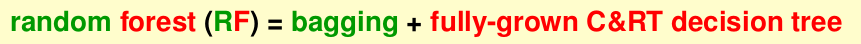
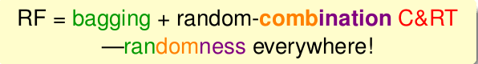
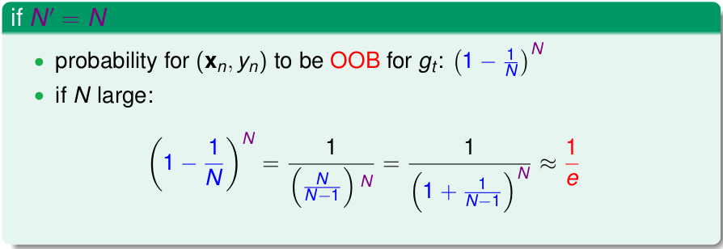
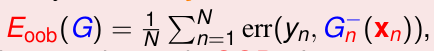
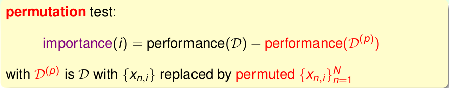
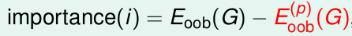

《机器学习技法》系列课程（十）
Random Forest Algorithm
我们已经学习了Bagging和Decision Tree。对于Bagging，它使用bootstrap的方法获取不同的g，将他们unifrom组合到一起，使用Bagging可以降低Variance!对于Decision Tree，它通过递归的方法切分数据，实际上也是很多g的组合，然而，它对数据很敏感，Variance很大。
现在我们考虑将Bagging和Decision Tree融合到一起使用（aggregation of aggregation），这也就是将要学习的随机森林（Random Forest；RF）。

对于随机森林，它使用bootstrap方案获得多个容量和原始数据容量相同的数据集合，并使用这些数据集学习多个不同的决策树，然后将它们uniform到一起。随机森林继承了决策树简单、高效的特性，同时，也继承了C&RT的优点，而使用Bagging也能有效避免完全成长的决策树会发生的overfitting的问题。
另一方面，我们考虑在Bagging中是如何获得不同的数据：它利用的是数据角度的随机。那么，我们可以从特征的角度考虑：对features进行抽取，从原有的大量特征中抽取一部分做决策树。例如在100个特征中随机抽取10个特征进行构建，这实际上就是一个特征转换，从一个高维度特征转换到低维度特征。随机森林的原作者建议在构建决策树时，每一个分支的选择都重新随机选取特征，这样能保证决策树更随机。
此时，我们的随机森林表示如下（Bagging算法和使用特征子空间的组合）：
我们说从特征中随机抽取，其实可以看做原有特征矩阵乘以一个投影矩阵(对特征进行投影，投影到指定的空间)，该投影矩阵的每一行都是natural basis（一些基向量）。那么能否将原始特征投影到其他方向（非固定的位置，随机的方向），如果这样做，我们得到的模型将会更加复杂，同时其能力也更加强大。那么我们就会利用一个新的投影矩阵，其每一行的元素都是随机的，它将多个特征combination起来，并且这个映射通常向低维度的空间进行映射，所以每一行中非0元素是有限的（和投影空间维度相等）。
此时，我们的随机森林表示如下（Bagging和随机组合特征的组合）：

Out-Of-Bag Estimate
在开始本话题之前，我们讨论有关Bagging的内容，它使用Boostring来从原始数据中不放回地随机抽取数据来学习到不同的假设g，最后将这些g使用uniform的方案组合到一起。那么每一次都会有一些数据不会被选到，或者说每次选择数据来学习g时，绝大多数都是使用原始数据的一个子集完成的，我们将这些在学习gt过程中没有使用到的数据称为gt的out-of-bag(OOB) examples。
那么，如果数据容量为N，如果我们使用了N个g，有多少个数据是一次都没有被选择的呢？我们可以使用数学进行推导：

也就是说，如果N非常大，将会有接近1/3的数据从来没有被用到过。那么我们可以使用这些从来没有用到过的数据做一些和Validation类似的事情。我们可以用这些数据来验证每一个得到的gt，然而我们关心的是最后融合多个gt的G(x)，所以这一步是没有必要的。那么我们该如何利用这些数据验证G呢？我们可以看一看数据(x, y)是哪些gt的OOB的子集，由此验证这些gt，然后将所有的样本的验证结果取平均即可。

我们将上述Eoob称为Bagging（RF）的自我验证(self-validation)。在以前的工作中，我们在得到假设g后，需要使用Validation Set来进行模型选择，而在随机森林中，由于有OOB的存在，我们使用Eoob就可以在训练过程中就完成了模型选择，而无需重新训练模型了。
Feature Selection
接下来，我们讨论有关特征选择的问题。
对于我们手上的数据，其往往是高维度的，利用特征选择，我们可以去除冗余的信息，筛选掉无关的信息。对于特征选择，实际上就是一个在学习一个特征转换，它将原有的高维度数据转换为一个低维度的数据。我们做特征选择，好处是可以简化问题，提高效率，降低overfit。然而，特征选择往往是困难的，需要花费很多时间，同时如果选错了可能会造成更糟糕的后果！在Decision Tree以及AdaBoost中，其算法中就已经内建了特征选择的过程，比如决策树每个节点选择使用那个特征来分割数据。
如果我们能够针对性地计算每一个特征的重要性，然后就可以top-d个特征作为特征选择的结果。这对于线性模型来说是简单的，比如pla算法中，我们使用的权重向量就能说明这个问题。如果是非线性的模型，它的特征选择往往很困难，对于这种问题，我们可以采用random test：如果某一个特征很重要，那么如果我们使用一些随机的数据来测试这个特征，它往往会表现很糟糕！那么我们该使用什么样的随机数据呢？我们可以使用指定分布的随机数据，比如高斯分布等；或者使用permutation test（将原有的多维度数据各个维度中的数据顺序打乱），这样来比较使用两种数据后的差距。

我们可以使用上述表达式来衡量特征的重要性，然而问题是Dp的性能需要重新训练模型并做validation。我们能否采用一些取巧的方法来避免这种问题呢？对于随机森林来说，可以选择在训练过程中仍然使用数据集D而不使用Dp，而在使用OOB验证过程使用permutation test！

在随机森林算法中，使用permutation和OOB进行特征选择通常更加高效，同时也能够保证性能！
Random Forest in Action
最后，在实践中，随机森利中包含的决策树越多越好，我们总是利用有限来逼近无限。
文章内容和图片均来自“国立台湾大学林轩田老师”的《机器学习技法》课程！
— END —